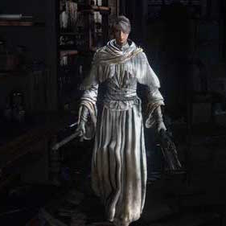

Iosefka |
|
|---|---|
|  | |
| General Info | |
| Location | Drops |
| Iosefka's Clinic | Oedon Writhe |
Iosefka is a non-player character in Bloodborne and owner of Iosefka's Clinic where the player begins their journey.
Iosefka Information
- There are, in fact, two Iosefkas: The real one and an imposter.
- The real one is the one you first meet through the door. She is kind, compassionate and gentle. When the player attacks her door repeatedly she kindly pleads, "Please stop, you are not a beast." If the player manages to access the clinic later in the game through the forbidden woods, a blue alien creature drops Iosefka's blood vial; that is the real Iosefka, but she was changed/experimented on by the impostor. She as the blue alien will take a while to become agro on the hunter.
- Impostor Iosefka is much harsher in the way she speaks and laughs maniacally when she asks the hunter to bring people in. Later in the game if you attack the door, she starts spouting mean words to the player and refuses to talk with you in the aftermath.
- Prior to discovering the Cathedral Ward, Iosefka will repeatedly provide the player with a Iosefka's Blood Vial consumable if the player does not have one. After discovering the Cathedral Ward, "Iosefka" (who is actually the imposter) will encourage the player to send people to her clinic.
- Imposter Iosefka seems to experiment upon, and eventually transform or kill, any survivors sent to her. The number of "aliens" (Celestial Mob) in her clinic changes as survivors are sent. Aliens slain at her clinic will drop the corresponding loot from the NPC they were prior. She will reward the player with Numbing Mist (x2) or Lead Elixir for each NPC sent to her clinic, as well as 1 Insight. If the Suspicious Beggar is sent to her clinic, she will reward the player with 3 Blue Elixir and 2 insight.
- If Iosefka's Clinic is entered from the rear, through the ladder from the caverns in the Forbidden Woods, the imposter will be found in a small room up a flight of stairs. On approaching the base of the stairs, she will ask the player to leave. At this point, she may turn hostile depending on your choice of action:
- If the player climbs to the top of the stairs and approaches her room, she will become hostile. Killing her will make her drop the rune "Oedon Writhe," and her quest line will end
- If the player causes her to become hostile and leaves, she will not be able to talk through the door again, even if the player sends more people to her clinic.
- If the player returns to the Hunter's Dream without making her hostile, she will close the doors and the player can speak with her at the top of the stairs again. She will tell the player that they are a "smart one" and beg them for more survivors. Her speech at this point alludes to the idea that she is a member of the Choir (who may have gone rogue during the fall of Yharnam since she appears to be doing this out of self-interest).
- When the player re-enters the clinic from the back during the Blood Moon phase and enters the room where she normally turns hostile, she will instead be found laying on a table on her knees, apparently with severe pain. At this point, she is not hostile and can be killed easily. Her dialogue implies that she is pregnant; killing her at this point will yield a very special item, One Third of Umbilical Cord.
- If you decide to fight Imposter Iosefka, she uses the following weapons/tools to try and kill you:
- A Threaded Cane with Slow Poisoning.
- A Repeating Pistol.
- She usually throws a Numbing Mist at the start of the fight.
- She frequently makes use of Augur of Ebrietas.
- She will heal herself if her health reaches 50% and if the player stays far from her.
- She will use A Call Beyond if her health reaches 30% and if the player stays close to her; this can be staggered and prevented, or you may block it with a shield if you fail to dodge the projectiles.
- If during the evening phase you hit the door three times, Imposter Iosefka will disappear, and you will not be able to speak with her again until you kill Rom, the Vacuous Spider. Upon killing Rom, she will appear in her "safe room", where you can kill her to obtain One Third of Umbilical Cord.
Iosefka's Location
- Iosefka is found behind a set of double doors, at the top of the steps behind the "1st Floor Sickroom" lantern. Only her voice is heard, but she can be seen through cracks in the doors by angling the camera. Attacking the door will cause her to become defensive, giving the player two warnings. If both warnings are ignored and the door is struck a third time, she will leave the doorway.
- Imposter Iosefka is found in the same exact location after you discover the Cathedral Ward with the original Iosefka gone (or more specifically, transformed into a Celestial Mob). During the night phase, she will relocate to her "safe room" located at the top of the stairs in a room accessible through the back entrance (you must travel from the Forbidden Woods to access this location). If you decide to not make her hostile and reload the area, she will appear once more in her original spot behind the double doors with said doors locked once more. Finally, during the Blood Moon, she will be found once again the "safe room."
Dialogue
Upon speaking with (real) Iosefka for the first time:
Are you... out on the hunt? Then I'm very sorry, but... I cannot open this door. I am Iosefka. The patients here in my clinic must not be exposed to infection. I know that you hunt for us, for our town, but I'm sorry. Please. This is all that I can do." (Gives 'Iosefka's Blood Vial' x1) "Now, go. And good hunting."
Upon speaking with Iosefka when in possession of Iosefka's Blood Vial:
Are you still in need of something? But I have nothing more to offer. Please, try to understand my position. I can only pray, for a fruitful hunt."
Upon speaking with Iosefka when you are not in possession of Iosefka's Blood Vial:
You are safe, thank goodness. But I’m afraid nothing will change. I cannot open the door. I’ll do what I can, of course. Perhaps this will help you, if only in some small way. (Gives 'Iosefka's Blood Vial' x1). Now, go. I pray for your safety.
Upon receiving your fourth Iosefka's Blood Vial:
Ah, you are safe. Thank goodness. But I'm afraid nothing will change my mind. I cannot open the door. I'll do what I can, of course. Perhaps this will help you, if only in some small way. (Gives 'Iosefka's Blood Vial' x1)
This night is long, but morning always comes. Someone of your caliber won’t fail us, I am certain. And once the night of the hunt ends, we can speak face-to-face. Then I can finally see what you look like. I shouldn’t be thinking this but I am rather looking forward to it. So please, be careful out there.
Upon speaking with Iosefka after receiving your fourth Iosefka's Blood Vial, but you are still in possession of one
I'm sorry...I have nothing else to offer you. I will pray for your safety. May light shine upon this night, and your fortunes.
If you attack the door while Iosefka is still there:
Ahh! Ohh!
[After attacking the door again] Please stop! It's beasts you hunt. Why are you behaving like one? This can't be the real you. Please, stop....
[Talking to her again, but this time around not attacking the door once more] Are you calm again? Thank goodness. You mustn't let the hunt overcome you. Remember yourself. You are not a beast.
If you ignore Iosefka's pleading and attack the door again:
You are no more than a beast. I should've known....
Impostor Iosefka (After reaching Cathedral Ward lamp)
Oh, well, hello....Splendid. Let me ask you a small kindness. You're soon off to hunt, I presume? Then, if you find any survivors, tell them to seek Iosefka's Clinic. Upon my Hippocratic oath, if they are yet human, I will look after them, perhaps even cure them. This sickness, these beasts, they are not to be feared. This time the night is long. I might be trapped here, but I should do something to help. I'll even offer a reward for your co-operation. Tempted? Well, off you go then.
If you find anyone who’s still human, send them straight to Iosefka's Clinic. You can assure them, there’s no place safer. Please do me this service.
Oh, hello. You made it. Find any survivors? Or only beasts? Tell anyone who's human about Iosefka's Clinic. I will take proper care of them. They're in your hands, and soon, mine....
If you send a female NPC to Iosefka's Clinic:
Oh hello...You're all right. Very good. She's safe with me now, I presume you're to thank? The treatment is going well, stabilized, for the most part. Fascinating, really....Here you are, as promised. (Receive Numbing Mist x2 normally or Lead Elixir x2 if you sent the little Yharnam girl).
Oh, thank goodness you came....Be a dear, find me some more. [Sinister Laughter]
After sending at least one NPC, but talking to Imposter Iosefka again before sending another NPC:
There may yet be humans out there. If you find them, send them to Iosefka's Clinic. I endeavor to treat every survivor there is. So please, be a saint.
If you send the Skeptical Man to Iosefka's Clinic:
Oh hello.....You're safe. What a relief. He's safe with me now. I'm thrilled to have another. Here you are, as promised. (Receive Numbing Mist x2).
After sending three people to Iosefka's Clinic:
What would I ever do without you? You're really making a difference. [Sinister Laughter]
If you find any humans, bring them to me. I'm depending on you, brave hunter. [Sinister Laughter]
If you attack the door when Imposter Iosefka is there：
Ahh! Can't anyone comprehend?! That'll be quite enough of you then. Isn't it time someone put you out of your misery?
Speaking to Imposter Iosefka inside the clinic after a set of doors before the moon is red:
Ah, moonlit scents....How did you worm your way in here? Well, I won't make any excuses. Would you mind leaving us alone? Things need not change...You'll do the rescuing, and I'll do the saving. But, if you refuse to leave....Ah, well...I always wanted to try my hand on a hunter.... [Sinister Laughter]
If you ignore Imposter Iosefka's warning and enter the room she is located in:
This won't hurt a bit...I'll soon have you right as rain...
Hush, hush....Stay still....This won't hurt a bit...I'll soon have you right as rain...Just.....Die.....ENOUGH OF YOU!!! Now, stop that
If you kill Imposter Iosefka before the Blood Moon:
[In a dying, pained voice] Curse this oblivious fool...
If Imposter Iosefka kills you while hostile:
[Excited Sinister Laughter] Oh, how exciting! I've never worked on a hunter before...
Speaking to Impostor Iosefka through 1st Floor Sickroom doors after deciding to not make her hostile:
Oh, hello... Still alive, are you? I need more patients... There aren't many humans left, I know, but find me every last one you can. We must find a way. To surpass our own stupidity. You're one of the bright ones. Don't you see how much this means? [Sinister Laughter] If you find any humans, bring them to me. I'm depending on you, brave hunter. [Exquisitely Sinister Laughter]
After sending the Suspicious Beggar to Iosefka's Clinic:
Oh hello....You're alive. Good. I've received another patient. This time, I'll be trying old blood. I've achieved much. And I owe it all to you. Take this, as thanks. [Receive Blue Elixir x3]
Custom made. And cheers, to the discovery of kinship. Doesn't it make you feel warm inside? [Sinister Laughter]
[If you haven't sent every single NPC to Iosefka's Clinic] Please....find me some more. I'm depending on you, brave hunter. [Sinister Laughter]
After you've sent every single NPC to Iosefka's Clinic:
Oh hello....You're still alive. But I suppose we're nearing the end. I don't imagine there are any left who haven't turned by now. Tragic, really, but what's to be done....
Speaking to Iosefka inside the clinic after the moon is red:
God I'm nauseous... Have you ever felt this? It's progressing. I can see things... I knew it, I'm different. I'm no beast... I... Oh... God, it feels awful... but, it proves that I'm chosen. Don't you see? How they writhe, writhe inside my head... It's... rather... rapturous...'' [Pained yet still Sinister Laughter]
Lore
- The player only meets Iosefka once during the game, before entering the Cathedral Ward. The Iosefka you speak to after reaching Cathedral Ward is an impostor and a member of the Choir, the upper level of the Healing Church.
- The fake Iosefka, or "Fauxsefka," has taken up residence in the clinic in order to obtain subjects to experiment on. For experimentation purpose, old blood was taken from Ebrietas, Daughter of the Cosmos (or perhaps another kin being), and she will use it on herself, therefore elevating herself into a higher being, if the initial experiments proved to be successful.
- Tests were first performed on the real Iosefka and then anyone else the hunter sends to the clinic which result in their being transformed into Celestial Mobs, a type of kin (an elevated being that ranks above humans but below the Great Ones).
- The fake Iosefka, or "Fauxsefka," has taken up residence in the clinic in order to obtain subjects to experiment on. For experimentation purpose, old blood was taken from Ebrietas, Daughter of the Cosmos (or perhaps another kin being), and she will use it on herself, therefore elevating herself into a higher being, if the initial experiments proved to be successful.
- Confronting her before killing Rom disrupts her plans and results in the hunter killing her.
- However, if the player comes after the Blood Moon appears, she will have succumbed to madness after imbibing a One Third of Umbilical Cord in a desperate attempt to evolve herself before the night ends.
- Ultimately it ends in failure as her blood remains red upon slaying her instead of the clear color of the the elevated kin.
Trivia
- Iosefka's name can be traced back to the masculine Hebrew name Joseph ("God will provide"). Iosefka, or the Polish Józefka, is a diminutive form of the name Józefina.
- Iosefka's name might be a reference to Josef K., the protagonist of Franz Kafka's novel The Trial.
- The true name of the Imposter Iosefka is never revealed.
- If you kill Imposter Iosefka and have not yet entered the Blood Moon phase, you can still send NPCs to Iosefka's Clinic.
- However, they still turn into "aliens" regardless. It could be a lack of insight on From Software's part, or it could mean the NPCs tried to use some of the blood vials there and unwittingly turned themselves into Celestial Mobs as a result.
- The player can navigate to the sickroom before the Cathedral Ward via the use of a bug and directly face the human Iosefka.
- The "impostor" theory is confirmed in the end credit.
- Jenny Funnell, the voice of the real Iosefka, had previously played both Yuria the Witch and Quelaana from Demon's Souls and Dark Souls, respectively. Players familiar with the Funnell's previous roles may note the jarring (if subtle) change in voice actresses after accessing the Cathedral Ward, subtly signifying that she has been replaced.
- Lucy Briggs-Owen, the voice of the imposter Iosefka, also voiced Adella The Nun, Vicar Amelia and young female protagonist (Youthful Voice); her voiced characters are primarily associated with the Healing Church.
- Iosefka wears a special variant of the White Church Dress, which has no boots. The Imposter Iosefka is barefoot, which is impossible for the player character while wearing the same item.
Gallery


 Anonymous
Anonymous
- Anonymous
If you manipulate the camera to look through the cracks in the door's window, you can actually see a bit of the real Iosefka. From what I could see, she still wears white, but she has balck hair instead of the imposter's blonde.
I'm playing BB for the 10th time, and this time she wasn't in that top room. She was behind the door, but with the same behavior from previous one
- Anonymous
In the beginning of the game, if you use a glitch to get behind the gate that you normally would get to from the Forbidden Woods, go into the clinic and you will find Iosefka at the door, after that go to where you would find the Fake Iosefka and you will find her on top of the table. Try as you may you cant kill her nor will she turn hostile, but you can freely hit her as much as you want. Could it be possible that the fake was "hiding" in there? Cuz where does the fake even come from in the first place?
- Anonymous
Got a oedons writhe after blood moon. Attacked one of the celestials in the ward
- Anonymous
Important note! Even if you know the real Losefka is dead, DO NOT ATTACK THE DOOR IN ANGER!
I did it, and didn't realise the game counts attacking the door as attacking the npc.
I was locked out of the 3rd ending within the first 20 minutes, but only just discovered 29 and a half hours later!
There's no sign of where she could of gone, no corpse anywhere. She just decided to have a tantrum and phase out of existence (but still continued to turn npcs into Celestial mobs)
- Anonymous
so we are gonna steal her umbilical cord let the record show I'm not the father
- Anonymous
- Anonymous
- Anonymous
- Anonymous
Here's a fun one; if you reach the Cathedral Ward without dying and without activating any Lanterns, use of a Hunter's or Bold Hunter's Mark will transport the player back to Iosefka's clinic, through the locked door into the sickroom where your character first awakened. At this point, a transformed Celestial Mob will be present, which may be killed for a single vial of Iosefka's Blood. This is the only way to receive Iosekfa's Vial on a no death run, as true Iosekfa will not appear prior to entrance of Cathedral Ward without the player having died at least once. If the player chooses to return to the clinic on foot after progressing to Old Yharnam and without activating the Mark, Iosefka's dialogue will proceed as normal. However, once this trick has been employed, and regardless of previous progress, her dialogue will be accelerated to post-Suspicious Beggar remarks. Additionally, all loot rewarded by Iosefka from the delivery of any NPC, including the Young Yharnam Girl will come in the form of 3 Blue Elixirs, as opposed to their original quantities.
- Anonymous
- Anonymous
- Anonymous
- Anonymous
Her name is definitely a reference to Kafka's Josef K. from The Trial
I wonder what happens if you enter the clinic by using the werewolf gate trick just after awakening, will the real Iosefka show up or does the impostor already replace her?
- Anonymous
Imma check this in a week, but
I killed her after killing gascgoine, cause i did coffin skip(unpatched version of game) and i would like to know if i come back after killing rom will she be there?
- Anonymous
- Anonymous
I accidentally aggro'd her but didn't kill her (not that my under leveled hunter could anyway), can I still get the umbilical cord if I go back during the blood moon?
- Anonymous
i attacked her through the door that you talk to her at, and she said that " I must has been confused". now she is gone, and i have no idea where she went.
- Anonymous
You can kill her with a single pebble after the blood moon for the 1/3 umbilical cord on new game.
- Anonymous
can you still get the 1/3 umbilical cord if you beat her before the blood moon phase? i want to get into cainhurst and i need to get into the clinic to do that but i also want all the umbilical cords.
- Anonymous
This character's story line is one of the biggest plot twists in the game imo.
- Anonymous
I wish we would have gotten to meet regular Iosefka in person :( she seemed so nice
- Anonymous
If you do the new skip you can see the imposter iosefka standing in the back of the clinic can be killed
- Anonymous
Just as a heads up you can't kill the imposter early doing the beast grab skip and the real Iosefka can't be killed
- Anonymous
Do you unlock anything by getting the fourth blood vial dialogues?
- Anonymous
She mentions her hippocratic oath while asking you to send people over, so that must mean there was an ancient Yharnam Greece. Can we get a prequel to that lmao
- Anonymous
I think if you kill her, and then send NPCs there, they will still get turned into Celestials somehow. And, you miss out on her giving you rewards. weird.
- Anonymous
So does the Cainhurst Summons not spawn after shes on the table? I killed her and now I cant get the summons because only shes on the table
- Anonymous
She's probably a secret member of the school of mensis because she fights just like Micolash. Augur, pistol, augur, pistol...
- Anonymous
*****i just killed her because she pissed me off. If i has known that she gave a Umbilical cord i would have left her alone.
- Anonymous
So can you still able to talk to her after u keep smacking her door make her mad? And would she be back after I send more NPC to her clinic?
- Anonymous
She says "glory to kinship" and laughs if you know her secret but send somebody after sparing her
- Anonymous
- Anonymous
- Anonymous
- Anonymous
When she says, "Oh, how exciting! I've never worked on a hunter before," does that mean she is going to transform the Hunter into a Celestial Mob just like the NPCs? I mean, the Hunter is dead, so what would be the point?
- Anonymous
Spam augur spam pistol spam augur spam pistol. Get her down to 20% Larry her heal but she still gets the heal... Her fight is bull*****npcs should have a QS and heal limit like us. They did it in demons souls and dark souls, why change it
- Anonymous
- Anonymous
- Anonymous
I think there are some other dialogues depending on what order npcs are sent in, because she said something different when I sent only the beggar
- Anonymous
- Anonymous
- Anonymous
[DURING THE BLOODMOON PHASE]
> Reads a Hunter’s Note behind Iosefka
*wondrous tight spot ahead*
~_~
- Anonymous
Fun fact: Impostor Iosefka's corpse makes the shape of the Hunter rune if she's killed on the table during the Blood Moon.
- Anonymous
In case anyone's having issues fighting Imposter!Iosefka, I actually just used a fairly good tactic that trivialized her nicely.
First off, go into whatever quick melee your Trick Weapon does. don't bother with the slower power attacks (most weapons untransformed, some like the BoM can be tranformed).
Second, equip the Beast Roar (gotten from Forbidden Forest where you just came from)
now when you round the corner to fight her, start attacking ceaselessly with R1, when your Stamina is low, hit [ ] for Beast Roar. it will knock her down and give your stamina time to regen. rinse, repeat, victory.
she CAN sometimes get in one or two good hits, just Beast Roar her back to the ground and heal up
I wonder if this works on the Chikage guy in the Grand Cathedral... will need to science it
- Anonymous
weird suggestions, but the woman in the hut in forbidden woods, just before you find the tunnel that leads out at Iosefka is a character who goes sorely overlooked, and she is especially bizarre as she has a model but no related quest line. you cant send her to a safe area, and she says nothing of interest. my suggestion is she has something to do with Iosefka. what? I honestly dont know. first thought is that the impostor (due to looking identical to original Iosefka) somehow swapped through healing-church-great-one-weirdness, and this old woman is the original Iosefka, but as we basically know that OG Iosefka is the blue alien you always find, this blows the theory out of the water. in any case, that woman intrigues me. thoughts?
- Anonymous
Funny how this says she appeared to be in pain when she was impregnated by the great one, I felt the sounds she was making implied madness and arousal.
- Anonymous
I don't think the trigger for getting 2 insight and blue elixir from her is sending the Suspicious Beggar per se. In previous games I sent the Suspicious Beggar to her and only received the normal reward of 1 insight and numbing mist/lead elixir, but I had not yet entered the clinic from the Forbidden Woods. However, in my current game I entered the clinic from the Forbidden Woods and triggered her dialogue at the bottom of the stairs, left without aggroing her, and THEN encountered the Suspicious Beggar and sent him to her. When I returned to speak with her through the door, she gave me the "kinship" dialogue and the 2 insight & blue elixir. I suspect she gives this reward if you send her an NPC (including, but possibly not only, the Suspicious Beggar) AFTER you have entered the back of the clinic and "discovered" what she's really up to - your character is now sending her survivors without the pretense that she's going to help them. Hence the line "Cheers, to the discovery of kinship."
I haven't tested this with other survivors as I'd already sent them on their respective ways before killing Vicar Amelia... but if anyone can confirm that it works with any of the other survivors, I'd love to know.
- Anonymous
- Anonymous
"How they writhe, writhe inside my head..." This line isn't referring to tentacles or slugs like some people suggested, but Brain Fluid: "brain fluid writhed inside the head, the initial makings of internal eyes." Brain Fluid was used to create the patients of the Research Hall, which eventually became the Celestial Emissaries, delusional interpretations of the patients. Apparently, Brain Fluid was produced by simply imbibing water in copious amounts, but perhaps the Third Umbilical Cord produces a similar effect.
- Anonymous
- Anonymous
Well, when I entered the clicnic after the Forest, Iosefka wasnot there. She had said nothing and I did not see anything else. Is this a bug? A time before the Forest, when Iosefka told me to order people to go her clinic, I tried to stab her through the door and then she stop talking to me... what does happened at all? please help
- Anonymous
- Anonymous
- Anonymous
Whoops. Looks like I blew my chance at the umbilical cord. Killed the heck outta her, never met the pleasure woman. That's two of four possible umbilical cords, which you need three of to get the true ending.
Ah, well. I can get into NG+ quicker I guess.
- Anonymous
So the only worthwhile reward is the 3 elixirs from the beggar?
- Anonymous
I tried to kill Iosefka while she was on the table, having not talked to her the entire game. I go in for the stab, miss and hit just the table (barely), and was killed by some invisible force. She was still on the table and no enemies in the building (or in the previous 2 areas for that matter). Happened to anyone else?
- Anonymous
- Anonymous
- Anonymous
Before I can get into the clinic from the rear entrance, I attacked the door where you suppose to use it to talk to her, this caused her to not talk to me anymore and when I manage to get inside her clinic she's gone.
- Anonymous
The fact is that her last words are "How they writhe, writhe inside my head... It's... rather... rapturous...", and the Third Umbilical Chord's description she drops says "Provost Willem sought the Cord in order to elevate his being and thoughts to those of a Great One, by lining his brain with eyes. The only choice, he knew, if man were to ever match Their greatness." So my guess is that Imposter Iosefka is trying to find some kind of Umbilical Chord with her experiments on people and, with the red moon on the sky, she gets one and eats it. Then, her brain is filled with eyes, just like Mother Brain is. That explains the words "How they writhe, writhe inside my head...". And her situation on the table, for me it seems a spider posture, a direct connection to Rom, the Great who was granted with Eyes. Then, if you kill her, the Chord she drops is the one she had eaten before. I have more lore discussions, but I think Iosefka's page is not the best to discuss it.
- Anonymous
Ok, after lighting the Cathedral Ward, i could then send people to her clinic but i didn't do so at all. However i did hit her door(double door) with basic attacks, then she said something bout someone should put me out of my misery. Finally after getting into the clinic through the Forbidden Woods path, she doesnt even appear @@ SHE"S NOT EVEN THERE... Tried loading again & again. Still not there :( My moon is still white though, not yet orange..
- Anonymous
Has anyone tried not to kill her after she is on the table? Does her dialogue change at all, or is killing her on the table the only way to get the one third umbilical chord?
- Anonymous
I just came back to Iosefka's clinic via the Forbidden Woods and while I was there decided to check up on the old grumpy lady (the one from Yharnam Central, she is the only person I have sent there so far). I talked to Iosefka through the door and she said the old lady is doing well and she is treating her (followed by a weird laugh). I then walk down the stairs, past the lamp room and into the surgical room where I receive 2084 Blood Echoes from absolutely nothing. I can keep receiving them by running to and from Iosefka's door to the surgical room. Iv'e done it six times in a row now and been given 2084 every time. Thoughts?
- Anonymous
So, after sending 4-5 NPCs to her I realized that she was experimenting on them so I attacked her through the door. She became hostile and said "Isn't it about time someone put you out of your misery?". I kept attacking for 5 more tries, then I tried to talk to her and she said nothing. I went to the Forbidden Woods back entrance to find her, but I she wasn't there, only the aliens. Later on I went to Brygenwerth, and she was there, hostile. I killed her and assumed I wouldn't be getting an umbilical cord. When I returned to the clinic I used the front entrance. The doors were open but her voice said "Isn't it about time someone put you out of your misery." I was like what, you're dead?? Then I walked through the clinic and found her on the table twitching and stuff. So I got to kill her twice, oddly enough.
- Anonymous
Checked it and if she turns hostile towards you, but you don't kill her, you will not be able to talk to her through the double door, not even if you send another person to her clinic.
- Anonymous
Got some dialogue where she said she was trying to transcend human stupidity. Wanted to send her people immediately. That's a cause I can get behind.
- Anonymous
I used the glitch to go to forbidden Forrest at beginning and i entered her clinic, she was ok and NOT hostile. When you enter the clinic later (i've sent no one to her) you'll notice there is STILL one alien, when you kill him he drops Iosefka blood vial.. Meaning that alien is the real Iosefka (she was the only one to give you that item...)
- Anonymous
After the moon gets orange i entered without the white church set from behind and get the same dialogues
- Anonymous
I killed her before Rom and I did not get the umbilical cord(wiki says if you kill her before the moon turns orange, which it was not)
- Anonymous
If you go to the front door after gaining access via the back entry there is an item on the ground. It's Iosefka's Blood Vial. I'm thinking that this may confirm that the Iosefka you speak with after Cathedral Ward is an imposter as she will no longer provide vials to you after that. There is also an "alien" in the room next to the item or that drops the item (killed it too fast to know if the item was there previous)
- Anonymous
So to gain the third of the cord I need to kill Iosefka from the forbidden words entrance after I killed Rom? I haven't sent her any people and haven't accepted her blood vials I'm just making sure because I'm pretty sure I've messed up Arianna's quest line and I'm going for the hidden ending.
- Anonymous
If you attack her through the door, she becomes hostile and says "Isn't it time someone put you out of your misery?". At this point, you an no longer talk to her, and when you enter her clinic from the Forbidden Woods she is NOT in the clinic at all, and has completely disappeared from the game so far as I can tell. Conversation through the door: https://www.youtube.com/watch?v=SJTf21eomN4
- Anonymous
I read about what happens and had to see it for myself. Interesting stuff. Decided to post the video for those who want to see https://youtu.be/P1H9pvlF2Dc
- Anonymous
I killed her, and after that I sent the suspicious beggar to the clinic. Next time I went there, he was converted. Is this another bug?
- Anonymous
On my first playthrough she said what's in this Dialogue, but today, i went back to her on a second character, and she had a different one, she told me to bring back any people who need shelter and cure.
- Anonymous
- Anonymous
the main character in Kafka's Trial is a guy named Joseph K. Kafka wrote in German, in which the name is pronounced... Iosefka :) might all be coincidence, but the world of Myiazaki is close to the one Kafka depicted in his books (The Trial, The Castle etc.) where a character is seemingly lost, being sent from one guy to another, trying to understand what's going on... he's trying to reach the Castle but for some reason never makes it etc. i'd say it's related, Myiazaki is pretty well read and Kafka is a classic of the genre (the absurd, the feeling of solitude, wandering with or without purpose in a hostile world, the labyrinth motive etc.) DF
Video with all the people you can send to safe Havens and how to find them.
Link: https://www.youtube.com/watch?v=cvwFXSi5DKA
- Anonymous
There is really no point for this NPC to stay alive before the moon turns red/orange (unless you f***ed up arianna's quest line) And the rune she gives is very good for a gun build or for more bullets. Or you love the blood viles she gives then sure keep her alive.
- Anonymous
Just for the name ideas above: Iosefka (actually written Josefka, but spelled Iosefka) is Czech feminine version of Josef (Joseph). I guess more Slavik languages have similar name. So no, not 'little Joseph', no 'Joseph K'. Just Iosefka.
- Anonymous
by entering the Clinic by the "fence jump shortcut" before killing Gascoine you'll find both Iosefka(the good one and the fake one) in: -the good one is at the door and will speaks to the player as he is on the other side of the door(quite normal since you are not supposed to be there) -the fake one is upstairs standing on the bed where she would lay after Rom is killed,she is equiped but not hostile,can be killed without her reacting,she will drop the Umbilical Chord Returning to Clinic after killing Gascoine: -Iosefka is transformed(even thoug you killed the fake one before) -fake Iosefka is revived(probably the game trying to keep itself safe) and will act as normal,drops the rune if killed Next run I'll try to kill her after the red moon and take her chord twice What quite dissapointed me is that if you send any npc to the clinic after killing the impostor(even in a legit way) they still get transformed,they should have think something since this is possible to do...
- Anonymous
- Anonymous
What happens if you send survivors to the clinic AFTER you've killed Iosefka?
- Anonymous
I rescued all of the NPCs, and sent all but 1 to the Cathedral - I send the cranky old lady to the Clinic, thinking she was a swell person, until I talked to her again and uhh...I kinda figured from her crazy laughter she was bad news. Anyway, the only "NPC" left would be the Suspicious Stranger, and I'm certainly not sending him to the Cathedral (I'd like to keep them alive). So is it worth sending the Stranger to the Clinic? And if not, should I just kill Iosefka?
- Anonymous
Used the fence jump glitch and got into the clinic early, had only killed Cleric beast. Impostor was standing on the table you'd find her on after Rom, hit her and she didn't turn hostile so I kept going until she died, and got a third of umbilical cord.
- Anonymous
- Anonymous
In NG+ I managed the coffin/fence hop glitch and reached Old Yharnam sans defeating Amelia. I used the opportunity to assault Iosefka's Clinic. Upon entry I found an alien (despite never having sent any NPC there). The alien was not responsive or hostile. I executed it and received only Echoes, no drops. I found Iosefka, defeated her, and received only Echoes and a Rune for defeating her. The imitator was not present. I returned several times after defeating Amelia properly and the door is still open, the premises empty. I defeated Rom, and am going to head back to see if I cannot find this clone that's supposed to be there.
- Anonymous
I attacked her door until she wasn't there anymore (beginning of game). Further into the play through, I went through the rear entrance and she was nowhere to be found (this is before killing ROM).
- Anonymous
I had read somewhere that if you go into her room while wearing the White Church outfit you would get different dialog.
- Anonymous
During my second play throught, i entered into the room and she was not there, no warning from the top of stairs tooo. Just a blue mob that dropped her blood vial standing near to the door where you talk to her........ I had upset her before by hitting the door.
- Anonymous
Does anything else change the further you progress in the game? Like from the way she is after Rom, will she just stay that way until the end, or will there be more triggers after other bosses (death, gives birth, moves again, etc.)?
- Anonymous
Let her live until after the fight with Micolash? I'd be interested to see if she has a baby like the prostitute.
- Anonymous
After killing that beafiful woman i decided to get Iosefka's OToUCord. I sent the beggar to Iosefka and got some rewards before. When i awakened at the first lamp, the doors leading to her were opened. I ascended the stairs to see Iosefka dead and OTouCordless.
- Anonymous
Today I was playing Bloodborne and I hadn't been to the Clinic yet. Defeated Rom, went to the nightmare domain and killed Gascoigne. Got into the clinic and defeated 1 Celestial enemy (dropped the blood vial) and continued through. I had no dialogue with Iosefka before hand end never even knocked her door. She was lying on a bed in the top room and mumbled some rubbish about being in pain and that's it. left and went to Cainhurst but came back.... same thing. same dialogue and she was still on the bed. I haven't read of anyone else experiencing this so Inwas just wondering if it's normal? - J
- Anonymous
After taking the shortcut and getting to the clinic second floor I left after her warning. I was super low on healing and other items thanks to the forbidden woods. Anyway, I wanted to see all the dialogue so I struck the door 3 times to see what would happen. She stopped talking to me and I went back to the Hunter's Dream to restock. Well, when I went back to kill her for the rune she isn't there. I'm hoping she'll come back later after the red moon but as of now she's gone and I can't get my rune.
- Anonymous
I am just wondering if there is any reason why after killing rom the spider that this in turn has the event of the pregnant imposter. In the cut scene after killing rom you see the red moon, a woman and then a baby cries. Hmm...

{kind=link}
{kind=link}
This game's interactions really get on my nerves sometimes. So I sent everyone except Adella and Beggar, so I can get more rewards for "finding out" what she's actually doing later.
I went into her clinic and retreated, then sent her Adella afterwards. Normally she'd close the doors and reward you again but she's just not closing the door this time.
I tried lowering her health til she spoke more, and retreated, then sent the Suspicious Beggar and the doors were still not locked.
I think my mistake was approaching her in her room at all. You're probably meant to retreat after her first set of dialogue without ever seeing her.
0
+10
-1